Caso 022 · Jørn Utzon · 1973 · auditorio / ópera (gran equipamiento)
Dos canteras de arenisca y un vacío abierto al norte. El sonido pide masa y el sol de invierno pide un vacío que lo reciba: dos bloques de hormigón chapado en arenisca contienen las salas, y entre ellos queda una plaza abierta al cielo y al puerto, a la que se llega bajo un puente bajo (2,20 m) y que se abre a 36 m de altura de muro.
Quién: el Estado de Nueva Gales del Sur y una ciudad sin ópera. Qué: dos salas de espectáculo con su vestíbulo, restaurante y servicios. Dónde: la punta de Bennelong Point, en Sídney, sin edificar los bordes este y oeste. Por qué: dar a la ciudad una sala nacional que sea también un lugar público abierto al puerto. Cómo: con masa que aísla del ruido y un vacío que abre al sol.
Módulo de 7,20 m. Masa grande de 72 × 86,4 m (10 × 12 módulos), masa pequeña de 43,2 × 57,6 m y plaza de 21,6 m (3 módulos); alturas de 14,4 y 21,6 m en múltiplos del módulo.
| Espacio | Luz | Cálculo |
|---|---|---|
| Plaza abierta | horizontal y diagonal, sólida en invierno, difusa el resto | 32,7° el 21 de junio (mediodía) y 79,6° el 21 de diciembre; ≥ 45 % del suelo soleado de 10 a 13 h en invierno |
| Salas | artificial (acústica) | sin huecos; la masa perfora solo donde hay paso |
| Vestíbulos | horizontal, difusa | huecos de 2,4 m con alféizar a 0 hacia la plaza, detrás de las galerías |
| Restaurante | horizontal, difusa | cinco huecos al sur, sin sol directo |
| Paso bajo el puente | cenital-lateral desde los extremos | compresión |
En verano el sol cae casi vertical y lo paran las galerías (3,6 m de vuelo) y el puente. S01 dibuja los dos rayos del mediodía.
Sistema proporcional: módulo de 7,20 m, plaza de 3 módulos, alturas de 5 y 3 módulos; ejes acotados en las plantas.
Arenisca de Sídney en las fachadas (el material de la ciudad colonial), hormigón en estructura y cubiertas, acero en cerchas, tirantes y galerías.
Público al sur por la explanada y bajo el puente; embarcadero de ferries y jardín al este; servicio, carga y aparcamiento al oeste; entrada de artistas al norte. En planta baja, vestíbulo, taquillas y guardarropa, pasillo y aseos de mujeres y de hombres con aseo accesible; los escenarios, abiertos a la sala en todo su ancho, llevan a un lado el paso de decorados y la entrada de artistas, y los camerinos colectivos están en la planta primera de la franja oeste, fuera del escenario. En las plantas primera y segunda, vestíbulo alto, bar, salón, balcones de la sala grande, galerías y, en el puente, reuniones de 200 y 100 personas con un pasillo que une las dos alas. En la tercera, restaurante con cocina (con cinco aberturas fijas de 0,9 m hacia la sala, para ver el escenario) y ensayos. La franja oeste de las plantas primera y segunda se compartimenta en celdas de 9,6 × 5,4 m (camerinos, despachos, sala de juntas y aseos del personal) con un pasillo de 4,8 m. Las plantas se identifican por sus nombres, no por códigos.
| Exigido | Propuesto | Cumple |
|---|---|---|
| Sala grande de 3.000-3.500 plazas | 3.456 (platea 2.496 en 39 filas, balcones 640 y 320) | sí |
| Sala pequeña de unas 1.200 | 1.209 en 31 filas | sí |
| Plazas simultáneas 4.200-4.700 | 4.665 | sí |
| Restaurante de 250 comensales | 415 m², 48 mesas de 4 (192) y pasillo central de 3,2 m; los 58 restantes en el vestíbulo alto, no modelados | desviación: no se amuebla el resto |
| Reuniones de 100 y 200 | 246 m² y 156 m² (208 y 104 butacas) | sí |
| Escenarios, camerinos y ensayo | escenario grande de 1.244 m² (43,2 × 28,8 m, a todo el ancho de la sala) y pequeño de 622 m² (28,8 × 21,6 m), sin muros de boca; camerinos colectivos en N1 (coro 3 celdas, orquesta 3 celdas, con aseos y duchas), solistas e individuales; 4 camerinos individuales junto al escenario pequeño; 3 salas de ensayo | sí; sin foso de orquesta (desviación: la orquesta sinfónica va sobre el escenario y la ópera usa los primeros metros de platea) |
| Cocinas, almacenes, carga | cocina de 207 m², muelle de dos puertas, patio de carga | sí (camión rígido) |
| Aseos de hombres y mujeres | «Aseos mujeres» y «Aseos hombres» separados en cada bloque, con 6-7 cabinas que ocupan toda la longitud libre, 4 lavabos y aseo accesible; 26 inodoros de mujeres en la sala grande (PB, N1, N2 y N3) | sí; dotación justificada por plantas (cada nivel atiende a su público) y por los intermedios; queda por debajo de 1 inodoro cada 40 mujeres en la hora punta (desviación) |
| Aparcamiento de unos 100 | 100 plazas (55 + 17 + 24 + 4 accesibles) y zona de dejar y recoger en U01 | sí; sin flechas de sentido (pendiente de biblioteca: la lámina de situación no admite dibujo añadido) |
| Embarcadero de ferries (encargo) | pasarela de 8 × 34 m al este del jardín, en planta baja (P01, U01) | sí; sin muelle ni calado dibujado |
| Instalaciones | no se dimensionan cuartos de máquinas ni patinillos | desviación: el anteproyecto reserva la franja oeste y la cubierta para ellos (fase de ejecución) |
| Espacios exteriores | explanadas sur y norte, plaza abierta, jardín este | sí |
| Salidas D2D8 | sala grande 39 m frente a 34,6; sala pequeña 15 m frente a 12,5 | sí |
| Plazas de silla de ruedas D4D10 | 43 y 21 | sí |
| Borde este y oeste sin edificar | franjas de 30 m libres | sí |
| Piezas pedidas | perspectiva desde el recorrido de aproximación con figuras (V01), secciones de las salas (S02, a 1:250); fragmento del exterior a escala grande: los alzados S03 y S04 con sus pilastras; las plantas de las salas no tienen escala propia | desviación: sin lámina de detalle constructivo D01 (retirada por decisión de la revisión) y plantas de las salas a la escala de P01-P03 |
Superficie útil interior: 18.373 m² (planta baja 8.118, primera 3.866, segunda 3.866, tercera 2.523), medida entre las caras de los muros; bruta ≈ 20.600 m² (4,4 m²/plaza, algo por debajo del orden de 5-7 m²/plaza porque los vacíos de las salas no se cuentan: desviación).
Las antiguas cocheras de tranvías se suponen demolidas; el solar es libre.
| Elemento | Luz | Resultado |
|---|---|---|
| Forjado del vestíbulo (sin columnas) | 14,4 m | canto 0,60 m, postesado (L/24) |
| Forjados de franja oeste y puente | 14,4 m | canto 0,60 m |
| Balcones | 14,4 m en vuelo | canto 1,80 m (L/8, hormigón postesado) en vuelo desde el muro trasero y cuelgue de cinco tirantes de Ø 0,2 a la cercha de cubierta; el aviso de 27,5 m entre apoyos de la comprobación es este vuelo medido a lo ancho de la sala |
| Forjados de la franja oeste (celdas y pasillo) | 14,4 m entre el muro de fachada y el de la sala | canto 0,60 m (L/24) postesado; los tabiques de las celdas no son estructurales |
| Forjados de los bloques de aseos y de las franjas sur | 7,2 m y 14,4 m | canto 0,30 m y 0,60 m |
| Columnas de las galerías | 8,06 m entre ejes | Ø 0,30 m de acero, zapata de 1,6 × 1,6 m |
| Cerchas de la sala grande | 43,2 m | canto 3,3 m (L/13) |
| Cubierta grande | 7,2 m entre cerchas | canto 0,50 m |
| Puente | 21,6 m | viga pared de 4,7 m de canto (L/4,6) |
Cimentación: losa de 2,0 m bajo cada masa (de +0,50 a +2,50 m) y zapatas corridas de 3,2 y 4,0 m de ancho bajo los muros, de −2,30 a +0,50 m, apoyadas sobre pilotes de hormigón de 0,60 × 0,60 m cada 7,2 m bajo las zapatas de las salas, que llegan a la arenisca a −5,40 m; las zapatas de los pilares de las galerías, de 2,0 × 2,0 m, apoyan en un pilote cada una. El terreno rodea la cimentación y el agua está a la cota 0; el hormigón es estanco. Las juntas no se dibujan. Las columnas de las galerías son de 7,2 m, una por planta y apiladas (la sección las dibuja seguidas), arriostradas por los forjados de cada galería, sin esbeltez de 14,4 m.
| Elemento | Acabado |
|---|---|
| Muros de fachada | hormigón con chapado de arenisca |
| Muros de sala | hormigón visto con chapado de arenisca en el lado público |
| Cerchas, tirantes, galerías | acero |
| Forjados y cubiertas | hormigón |
| Suelo de vestíbulos | losa de hormigón pulido |
| Suelo de plaza | pavimento de arenisca |
Este anteproyecto no dimensiona los cuartos de instalaciones ni los patinillos: reserva para ellos la franja oeste (almacén general y archivo, apilados) y la cubierta, y lo declara como desviación en el cuadro de cumplimiento; la ventilación y la climatización de las salas se proyectarán en la fase de ejecución. El montacargas y el ascensor de carga unen almacenes, cocina y escenarios. La cartografía es esquemática.
No hay lámina de detalle constructivo. Capas del muro de fachada: arenisca 0,12 m, mortero 0,03, aislante rígido 0,10 y hormigón armado 0,95 (total 1,20 m), con pilastras de arenisca de 0,80 × 0,50 m cada 3,6 m. Cubierta: impermeabilización, aislante 0,12 m y losa de 0,50 m con voladizo de 1,2 m. Solera: pavimento de arenisca y losa de cimentación de 2,00 m. En las secciones, los forjados y las estancias se detienen en la cara de los muros de 1,2 y 1,8 m, y un umbral de hormigón continúa el suelo por el grueso del muro en cada paso.
Clima Cfa: sol de invierno dentro y de verano fuera, masa contra el viento del sudoeste y la brisa del nordeste abierta a la plaza.
Planta baja a una cota sin rampas desde el vestíbulo; ascensores públicos hasta la tercera planta. Evacuación de la sala grande: 39 m de salidas de sala (exigidos 34,6). Los 960 ocupantes de los balcones bajan por cuatro núcleos de dos tramos con puerta directa al exterior de 2,4 m (3,0 m en el núcleo 2): 10,2 m frente a P/160 = 6,0 m. Las plazas de silla de ruedas (43 y 21) están en la fila delantera junto a los pasos de salida. Los pasillos de la platea miden 2,0 m, con un peldaño por fila (5,6 cm de contrahuella, pendiente del 6 %). El itinerario accesible hasta los ascensores públicos se dibuja en P01 con círculos de giro de 1,50 m, desde la plaza por el vestíbulo; la entrada principal accesible es la de la plaza.
Comparte con la obra original lo que impone el encargo: dos salas, aproximación peatonal desde el sur, sol al norte, terreno llano, servicio por el oeste y bordes este y oeste libres. Se aparta de ella en la idea (dos masas y un vacío frente a una plataforma con cubiertas), en la sección (suelo a +2,50 sin plataforma elevada), en el material (hormigón y arenisca sin cerámica) y en el lenguaje (ortogonal, módulo de 7,20 m). La teoría lo sostiene: el estereotómico y el tectónico, la compresión y la dilatación y la luz medida.
El soleamiento calculado y las vistas maqueta 1 y maqueta 2 sustituyen a las maquetas reales al sol. maqueta 2 mira desde el escenario hacia la sala (balcones colgados y aberturas del restaurante) y no calcula el sol dentro de la sala; la platea aparece a la cota de la planta baja, sin su pendiente. Quedan pendientes de biblioteca el poché negro de las secciones, el desagüe rotulado de la planta de cubiertas y las flechas de sentido del aparcamiento.
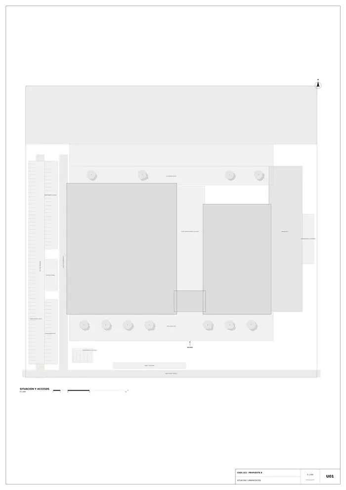
U01 · Situación y urbanización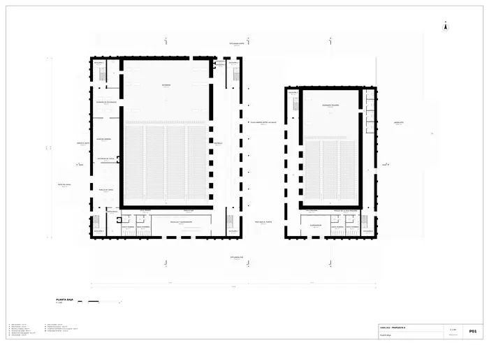
P01 · Planta baja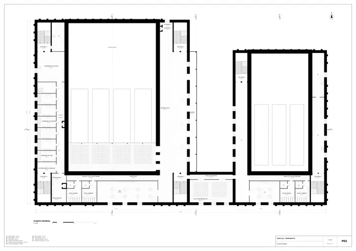
P02 · Planta primera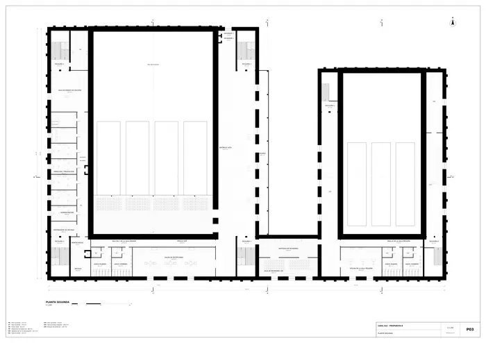
P03 · Planta segunda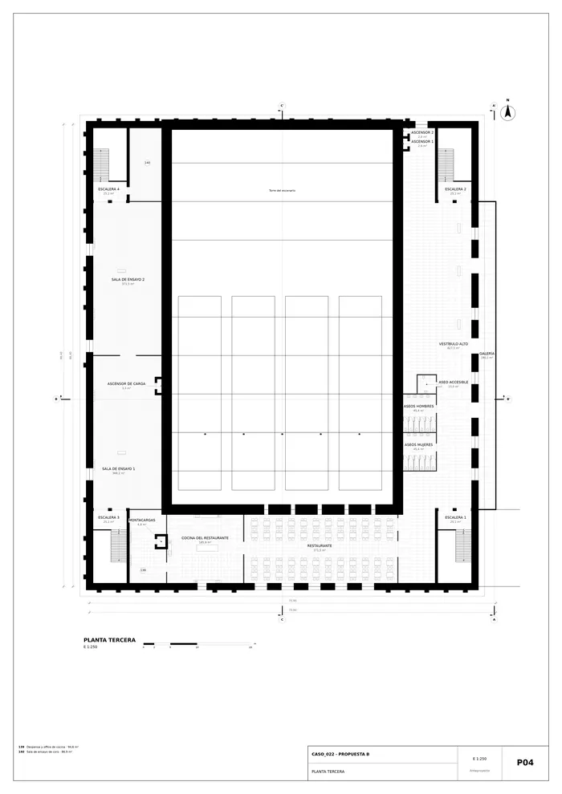
P04 · Planta tercera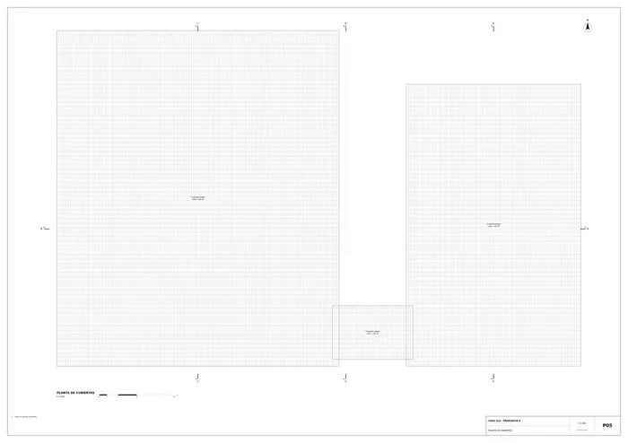
P05 · Planta de cubiertas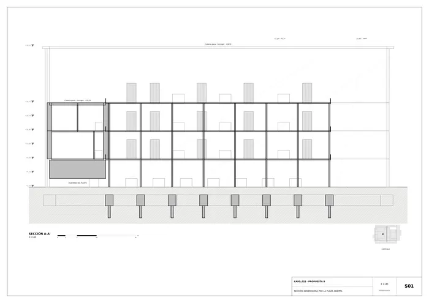
S01 · Sección generadora por la plaza abierta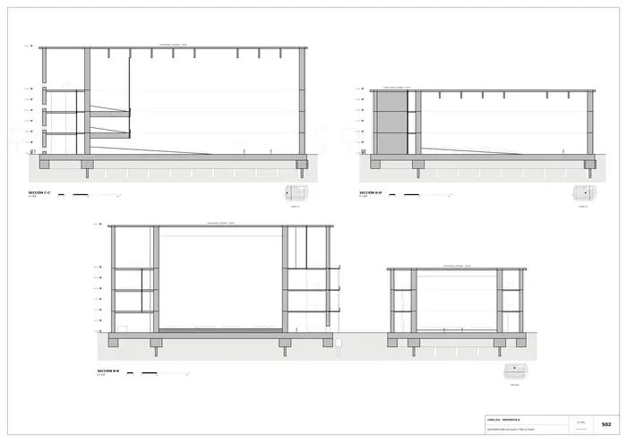
S02 · Secciones por las salas y por la plaza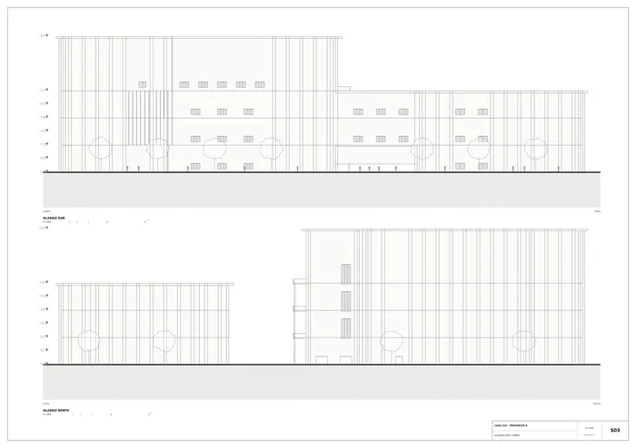
S03 · Alzados sur y norte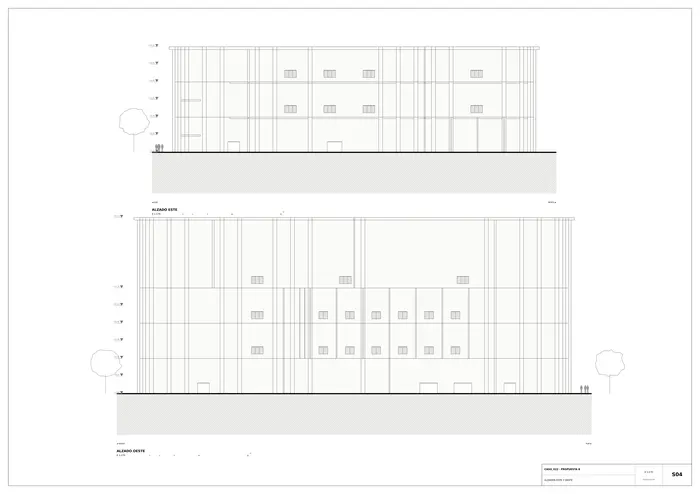
S04 · Alzados este y oeste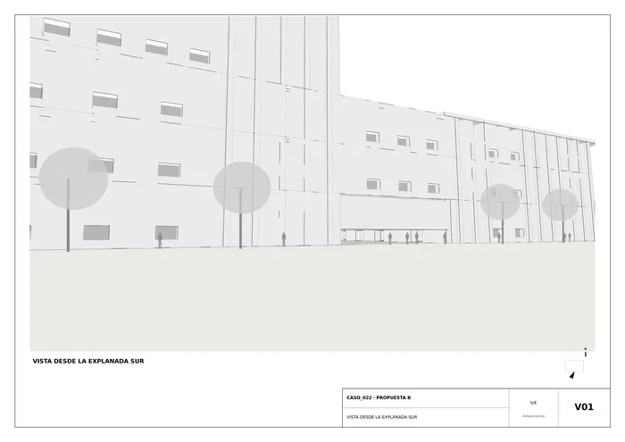
V01 · Vista desde la explanada sur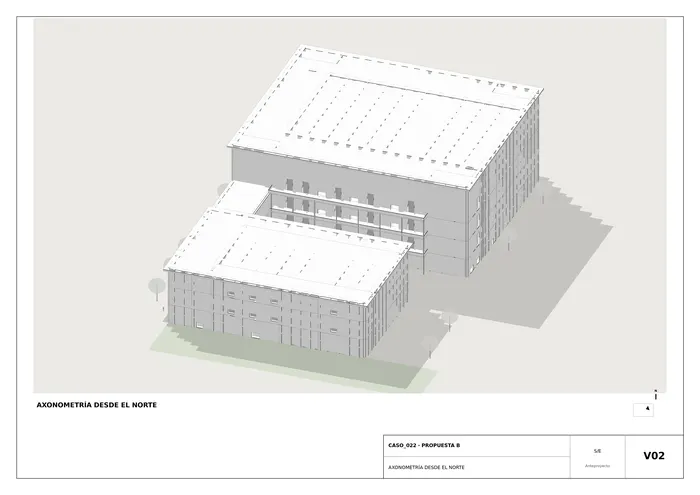
V02 · Axonometría desde el norteMemoria de la propuesta tal como la entregó el sistema. Se han omitido las notas internas del proceso (revisiones, control de reconocimiento y referencias a archivos de trabajo).